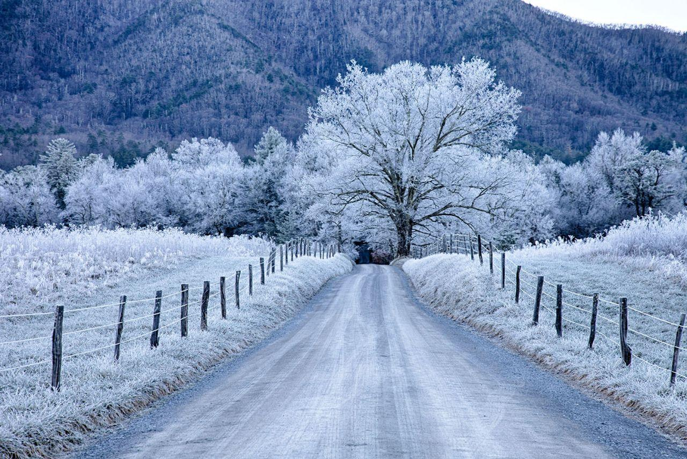
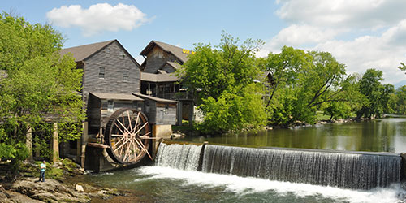
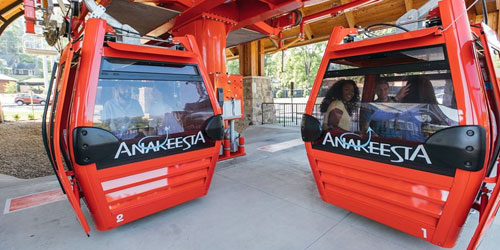

Pigeon Forge & Gatlinburg is a great place to visit for Christmas. The Great Smoky Mountains truly come alive with Christmas cheer and there is always joy in the air. See the city adorned with gorgeous lights and have a blast at the amazing holiday-themed shows and attractions. See awesome Christmas shows or even take an unforgettable journey on the Polar Express. Enjoy several terrific Christmas Shows on your vacation and create new, memorable Christmas traditions with the ones that you love.

Smoky mountain in Chrimas
History
Pigeon Forge was once part of North Carolina. Settlers first reached the area in 1788, when the area was governed by North Carolina. Pigeon Forge was the site of an iron forge built in 1820 by Isaac Love. His son built the Historic Old Mill in 1830. The other half of Pigeon Forge’s namesake is the passenger pigeon. Although passenger pigeons are now extinct, the community of Pigeon Forge preserves the memory of bygone era that brings to mind the rich diversity of life in the the wilderness frontier that was East Tennessee.
Adventure Awaits You

A good view of the Sevierville Water
Riding a Telegraph is awesome to try it one day
Come You will be with a great smile in your face

Look so amazing Shining in Christmas

You're invited to come and give it a try